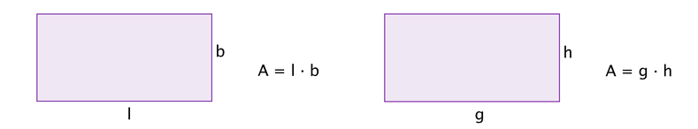

Å regne med bokstaver
Contents
Å regne med bokstaver¶
Algebra handler om å kunne generalisere mønster og sammenhenger. I slike generaliseringer er det lurt å bruke ulike bokstaver til å representere de ulike størrelsene. Vi kaller slike størrelser for variabler. Når vi skal løse problemer med variable størrelser er det fint å kunne gjøre beregninger og forenklinger med slike algebraiske uttrykk. Etter endt leksjon skal du kunne forenkle uttrykk som
Introduksjon til bokstavregning¶
I matematikken har du ofte behov for å finne uttrykk som gjør at du kan være mer effektive når du skal regne ut ulike verdier. Da må du kunne regne med bokstaver. Når du regner med bokstaver i matematikken, så gjelder de samme reglene som når du regner med tall, fordi bokstavene står for tall!

Bokstavene deler vi ofte inn i variabler og konstanter. Du har tidligere sett bokstavregning i formler, for eksempel når du skal regne ut arealet av et rektangel. Da brukte vi formelen \(A = g \cdot h \). Her står bokstaven \(g\) for lengden til den ene siden og \(h\) for lengden til til den andre siden. Denne formelen gjelder for alle rektangler. Noen ganger kan bruke andre bokstaver til å symbolisere lengdene til de to sidene. Vi kan for eksempel skrive \( A = l\cdot b\).
Regneregler for bokstavregning¶
Bokstavregning er ikke mer enn navnet tilsier. Du regner med bokstaver på samme måte som med tall. Under ser du regneregler.
Det er også viktig at du husker at du kan utelate multiplikasjonstegnet mellom bokstaver: \(a\cdot b = ab\)
De kommutative og assosiative lovene som du ser til høyre gjelder addisjon og multiplikasjon, men de utvides til å gjelde subtraksjon og divisjon ved \(a-b=a+(-b)\) og \(\dfrac{a}{b} = a \cdot \dfrac{1}{b}\).
Regnegler for bikstavregning |
|
|---|---|
Kommutativ lov for addisjon: |
\(a+b=b+a\) |
Assosiativ lov for addisjon: |
\((a+b)+c=a+(b+c)\) |
Kommutativ lov for multiplikasjon: |
\(a\cdot b = b\cdot a\) |
Assosiativ lov for multiplikasjon: |
\(a\cdot (b\cdot c) = (a\cdot b) \cdot c\) |
Fordelingsloven for multiplikasjon: |
\(a \cdot (b+c) = a\cdot b + a\cdot c \) |
Nedenfor vil du kunne se en video som gir et geometrisk bevis de to første regnereglene.
På slutten av videoen ovenfor fikk du utfordringen:
Utfordring
Kan du vise geometrisk hvorfor den kommutative og den assosiative loven for multiplikasjon gjelder?
Kommutative lov: \( a\cdot b = b\cdot a \)
Assosiative lov: \(a\cdot (b\cdot c)=(a\cdot b)\cdot c\)
Enkel bokstavregning¶
Bokstavregning handler om å regne med bokstaver. Du kan bare trekke sammen «like» bokstavuttrykk. Det vil si at uttrykket \((2xy+3x)(1+y)\) kan skrives som
Legg merke til at vi trakk sammen de to «like» bokstavuttrykkene \(2xy\) og \(3xy\) og fikk \(5xy\).
Hvor mye mellomregning du velger å skrive avhenger av oppgaven. Det er viktig at du viser hvordan du har tenkt og kommuniserer løsningene på en god måte. Det er viktig å skrive mellomregning på oppgaver du behersker, slik at du lærer deg å stykke opp tankegangen din også i de vanskelige oppgavene.
Oppgave 1¶
Lag en oppgave med minst ett addisjonstegn, ett subtraksjonstegn og en parentes hvor svaret på oppgaven du lager er \(3a^2b\).
rasjonale uttrykk¶
Tidligere i denne leksjonen har du jobbet med tre av fire regnearter og bokstavregning. Du har sett på hvordan du adderer, subtraherer og multipliserer ulike typer bokstavuttrykk. Den siste regnearten som gjenstår er divisjon.
Når man dividerer uttrykk, hvor en eller begge er bokstavuttrykk, kalles dette et rasjonalt uttrykk. \(\dfrac{1}{a} \) og \( \dfrac{y+1}{x^2-3}\) er to eksempler på rasjonale uttrykk.
Det er ikke noe spesielt med disse brøkene. Du regner på akkurat samme måte som med tall. Men det kan være mer krevende å finne den minste fellesnevneren.
Nå skal du først få prøve deg på en brøkoppgave.
Oppgave 2¶
Regn ut og skriv svaret som et uttrykk bestående av én brøk: \( \dfrac{1}{a} +\dfrac{1}{b}\).
Klikk på knappen til høyre for et hint!
Tenk over hvordan du bestemmer fellesnevneren? Hvordan bestemmer du fellesnevneren til to brøker med nevnere 3 og 4? Tenk på samme metode, men nå med bokstaver. Lykke til.
Ovenfor fikk du i oppgave å regne ut
Som du kanskje allerede har gjort, så må du først finne fellesnevner før du adderer uttrykkene sammen (akkurat som i addisjon av tallbrøker). En mulig fellesnevner er produktet av de ulike nevnerene. Senere i kurset vil du se at denne ikke alltid er den minste fellesnevneren. Med her er det den minste fellesnevneren og du får:
Likeverdige brøker¶
Brøker kan ha uendelig mange verdier ved å variere størrelsen av teller og nevner, men to ulike brøker kan også ha samme verdi. Når to ulike brøker representerer en like stor del av en helhet, sier vi at disse brøkene er likeverdige. Å vise at to brøker er likeverdige kan gjøres ved å skrive om uttrykkene til å ha samme nevner:
Ved tall:
Ved uttrykk: $\( \dfrac{6x^2y}{18xy^2}=\dfrac{6\cdot x \cdot x \cdot y}{3 \cdot 6 \cdot x \cdot y \cdot y}= \dfrac{6xy}{6xy} \cdot \dfrac{x}{3y} = 1 \cdot \dfrac{x}{3y} = \dfrac{x}{3y}\)$
Over ser du et uttrykk hvor vi forenkler uttrykket. Nevneren og telleren blir klart enklere skrevet til slutt. Ved regning med rasjonale uttrykk, kan også behovet bli å utvide brøken.
Multiplikasjon med rasjonale uttrykk¶
I videoen under viser vi hvordan du regner \(\dfrac{125}{12} \cdot \dfrac{84}{75} \) og \(\dfrac{2a^2}{9b} \cdot \dfrac{15b}{a}\).
Prøv selv før du ser videoen.